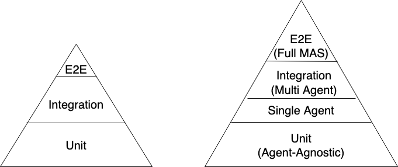
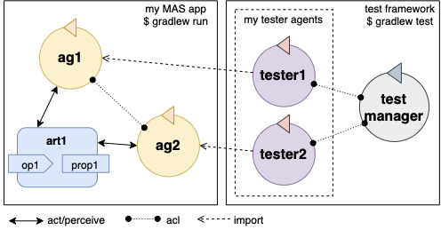

This tutorial explains how to test Jason agents in AgentSpeak, using a novel (as of 2022) goal-oriented test feature that enables an agent-oriented perspective on automated software testing and test-driven development. The feature allows writing test programs for Jason agents in AgentSpeak, and aligns software testing and agent-oriented programming abstractions. This consolidation of perspectives is called Goal-Oriented Test-Driven Development (GOTDD).
A presentation of this tutorial is also available here.
What is Goal-Oriented Test-Driven Development?
In modern software development, testing plays a key role, as it helps ensure the software works as expected. Ideally, developers use Test-Driven Development (TDD) approaches, in which a large portion of the tests is written during or even ahead of the implementation of the actual program code. The assumption is that specifying the exact desired behavior of a software component before or alongside the implementation facilitates a more rigorous assessment of the component and ensures testing is not cut short because of time shortage caused by mis-estimations. Generally, it is considered good practice to focus automated testing efforts on unit tests of small components that can and hence should be tested in a rigorous manner and to cover the overall system (or system of systems) with less dense integration tests and End-to-End (E2E) tests; the latter cannot cover all possible input and environment configurations because of the explosion in combinatorial options (even for fairly small systems) but they can potentially catch unexpected behavior of components that seemingly work correctly from a lower-level perspective.
From an agent-oriented view, unit tests cover behavior that is agent-agnostic, i.e. which can be tested as if it was a function/method call — for example, given the internal state the agent — and which is disconnected from the state of the environment and the other agents that (inter)act in it. While unit tests for agents are conceptually not different from traditional unit tests, Jason’s GOTDD feature is novel even on this level because it provides first-class abstractions for tests in an agent-oriented programming language. Still, more interestingly, Jason allows for the specification of tests that check whether an agent, given an initial environment state (and potentially given other agents), will eventually (or given a specific time constraint) achieve a particular goal; i.e., goals are promoted to first-class abstractions for test-driven development, which allows for integration tests for single agents (agent-environment integration) and multi agents (agent-environment-agent, whereby the environment may or may not contain explicitly modelled artifacts) integration. The figure below shows the test pyramid from a traditional software engineering perspective and contrasts it with an agent-oriented test pyramid.

The tutorial below provides examples of unit testing, single agent testing, and multi-agent testing with Jason/JaCaMo. Note that E2E tests are not covered, because these are typically implemented in a different technology ecosystem (for example: Selenium for end-to-end user interface testing). However, we consider E2E MAS testing an interesting open challenge that needs more exploration.
Under the Hood
Under the hood, Jason’s GOTDD feature allows for the instantiation of one main agent per test file, as well as for the instantiation of several mock agents; in addition to mock agents, the main (to-be-tested) agent may interact with other agents that have been implemented in a traditional manner. The main agent is monitored by Jason’s tester agent with regards to the main agent’s ability to achieve certain goals, or the agent’s internal state (for example: belief adoption). Whenever a corresponding assertion fires, the tester agent reports the result (pass or fail).

Test Levels in Jason/JaCaMo
Now, let us provide examples how tests on the three lower levels (unit, single agent, multi agent, assuming that end-to-end tests need to be supported by additional tooling) work. For explanatory purposes, we build projects inspired by an example provided in JaCaMo Book of an MAS to control the temperature of a room.
We start discussing current testing approaches that we can use for testing a JaCaMo project. After that, we provide an example of a unit test using a JaCaMo test library, then we face slightly more challenging situations, testing agent’s plans, mocking artifacts and testing agents' interactions. Each example builds upon its predecessor.
Project Setup
Let us set up our JaCaMo project and configure it for GOTDD.
-
First, make sure the
Java 15or superior is set.$ java --version -
Then, we download a JaCaMo facility for creating projects and execute it to create our
tdd_tutorialproject.$ wget http://jacamo.sourceforge.net/nps/npss.zip $ unzip npss.zip $ ./gradlew --console=plainNotice that this creates a sample project with the following source directory structure:
/ - src - agt - env - int - org - test -
We can run the default project just to make sure everything is working fine. An MAS console should open showing our
sample_agentprinting outhello world.tdd_tutorial$ ./gradlew run -
Also, we can already execute an example test:
tdd_tutorial$ ./gradlew test -
Now, we adapt the sample project to build an agent that controls the temperature of the environment. At
src/agt, we rename thesample_agent.aslfile toroom_agent.asl, remove the filesrc/test/agt/test_sample.asland fix thetdd_tutorial.jcmfor this other agent filename, as below:mas tdd_tutorial { agent room_agent }
Unit Testing in Jason (JaCaMo)
Let us start by implementing a unit test that tests a simple inference rule. In the file
room_agent.asl we replace the default content by the following rule:
now_is_warmer_than(T) :- temperature(C) & C > T.As we can see, the rule checks whether the current 'temperature' is greater than a predefined value. A possible method for determining whether this rule is working properly is to begin developing a plan that calls this rule in order to test it in a variety of situations. Debugging console messages and other tools such as the Agents' Inspector are commonly used.
Below, we demonstrate how this rule can be tested. Because this rule merely draws inferences and does not act in the environment, we consider this scenario a unit testing scenario rather than a single agent testing scenario.
Now, in the room_agent.asl file, we set a temperature value:
temperature(15).Finally, we try out our inference rule:
!auto_test.
+!auto_test:
temperature(C)
<-
.print("Current temperature: ",temperature(C));
.eval(X1, now_is_warmer_than(20));
.print(now_is_warmer_than(20)," = ",X1);
.eval(X2, now_is_warmer_than(10));
.print(now_is_warmer_than(10)," = ",X2);
.eval(X3, now_is_warmer_than(15));
.print(now_is_warmer_than(15)," = ",X3).This kind of test is performed using the usual command to run a JaCaMo MAS project (./gradlew run).
Such naive inline tests are frequently used to facilitate debugging, but have obvious
shortcomings:
-
They do not allow for a clear separation between test and production code.
-
They do not clearly describe desired behavior.
-
They make it hard to automate tests.
To test the file properly, we create the file test_room_agent.asl at src/test/agt.
At the beginning of test_room_agent.asl file, we import the Jason tester agent, as well
as the file that we want to test:
{ include("tester_agent.asl") }
{ include("room_agent.asl") }Then, we add a test goal, using the @[test] annotation:
@[test]
+!test_now_is_warmer_than
<-
-+temperature(15);
!assert_false(now_is_warmer_than(20));
!assert_true(now_is_warmer_than(10));
!assert_false(now_is_warmer_than(15)).As we can see, the test specifies the truth table of the inference rule, given the following three scenarios:
-
The provided value temperature is higher than the current temperature.
-
The provided value is lower than the current temperature.
-
The provided value is equal to the current temperature.
To use this testing facility, we merely need to execute the test command:
$ ./gradlew test --infoAs seen, the plan in line plan auto_test in the room_agent.asl file is no longer required.
The complete project is available here.
Single Agent Testing in Jason (JaCaMo)
In the following single agent testing example, we test if the agent cools a room when the temperature in the room is higher than some specific threshold, i.e., the agent reacts on temperature changes, whereas its actions in turn affect the temperature in the room.
We keep the rule now_is_warmer_than/1 of our room_agent and now, we implement the cooler
functionality that starts the cooler if the temperature is above the threshold:
+!temperature(T):
now_is_warmer_than(T) &
temperature(C)
<-
if (not state("cooling")) {
/**
* To control the room temperature it could
* activate a physical cooler here
*/
+state("cooling");
.log(warning,C," is too hot -> cooling until ",T);
}
!temperature(T).Analogously, the cooler should stop cooling if the temperature is below the threshold:
+!temperature(T):
state("cooling")
<-
.log(warning,"Temperature achieved: ",T);
/**
* Deactivating the cooler
*/
-state("cooling");
!temperature(T).Let us highlight that our room_agent example is simplistic from a real-world perspective, as we ignore the control-theoretical nature of the problem.
Finally, we ensure that the room_agent is continuously evaluating and adjusting its behavior, using the following loop:
+!temperature(T)
<-
!temperature(T).Note that in this example, we specify the initial beliefs of the agent in the jcm file.
mas tdd_tutorial {
agent room_agent {
goals: temperature(10)
beliefs: temperature(15)
}
}Also, we want to test whether the agent acts correctly.
So, we add to the file test_room_agent.asl at src/test/agt a new test.
For this, we set at target temperature of 10 degrees (given a current temperature of 15 degrees) and
regularly check in a loop whether the cooler acts as expected given the current temperature and the
agents’s goal:
@[test]
+!test_cool_until_temperature_dropping
<-
-+temperature(15); // The default current temperature is 15 degrees
!!temperature(10); // We want to reach 10 degrees (this is running in parallel)
.wait(50); // Give some time to the agent to react
for ( .range(I,1,10) ) { // Let us check 10x if it is cooling correctly
?temperature(C);
if (C > 10) { // Greater than 10, cooler MUST be on
!assert_true(state("cooling"));
-+temperature(C-1); // emulate that the temperature has dropped
} else { // Not greater than 10, cooler MUST be off
!assert_false(state("cooling"));
}
}
.drop_desire(temperature(10)).The complete project is available here.
Agents and Artifacts
In this final single-agent testing example, we introduce an artifact that our agent interacts with.
First, we configure the MAS in the file tdd_tutotial.jcm:
mas tdd_tutorial {
agent room_agent {
goals: temperature(21)
focus: room.hvac
}
workspace room {
artifact hvac: devices.HVAC(15)
}
}As we can see, our room agent focuses the hvac (air conditioning) artifact and has a particular
current temperature (15°C) as it provides to the agent this information.
The artifact models the air conditioning/HVAC. It has the following methods:
-
init(with temperature parameter): sets the initial temperature and sets the HVAC’s state toidle. -
updateTemperatureProc(internal (private), with step parameter): this is used to simulate changes in the room temperature. While the HVAC is not in stateidle, change the temperature bystepdegrees and waits for 100ms to then repeat the loop. -
startCooling: sets the state tocoolingand callsupdateTemperatureProcwith step set to-0.5. -
stopAirConditioner: sets the state of the HVAC toidle.
We will create the file src/env/devices/HVAC.java to implement these methods.
The source code of the artifact looks as follows:
package devices;
import cartago.*;
@ARTIFACT_INFO(outports = { @OUTPORT(name = "out-1") })
public class HVAC extends Artifact {
void init(double initialTemperature){
defineObsProperty("state","idle");
defineObsProperty("temperature",initialTemperature);
log("Temperature: "+getObsProperty("temperature").doubleValue());
}
@OPERATION void startCooling(){
log("startCooling");
getObsProperty("state").updateValue("cooling");
this.execInternalOp("updateTemperatureProc",-0.5);
}
@OPERATION void stopAirConditioner(){
log("stopAirCond");
getObsProperty("state").updateValue("idle");
}
@INTERNAL_OPERATION void updateTemperatureProc(double step){
ObsProperty temp = getObsProperty("temperature");
ObsProperty state = getObsProperty("state");
while (!state.stringValue().equals("idle")){
temp.updateValue(temp.doubleValue() + step);
log("Temperature: "+temp.doubleValue());
this.await_time(100);
}
}
}Then, we integrate the artifact with our agent, replacing the hard-coded state/emulation ("cooling") with actions upon the HVAC artifact. Note that the code below, is importing common-cartago.asl, as it is necessary when the agent interacts with CArtAgO artifacts.
+!temperature(T):
now_is_warmer_than(T) &
temperature(C)
<-
if (not state("cooling")) {
startCooling;
.log(warning,C," is too hot -> cooling until ",T);
}
!temperature(T);
.
+!temperature(T):
state("cooling")
<-
stopAirConditioner;
.log(warning,"Temperature achieved: ",T);
!temperature(T);
.
+!temperature(T)
<-
!temperature(T);
.
{ include("$jacamoJar/templates/common-cartago.asl") }
{ include("$jacamoJar/templates/common-moise.asl") }The artifact device/HVAC is not being instantiated, which means that the external calls startCooling and stopAirConditioner would break the test if they are executed. At this time, the main concern regards to the room agent functionalities, not the functionalities of other entities that it interacts with. To ensure this separation of concerns, the mock concept can be used. Here, the mock concept is used on the agent under test entity, i.e., we are replacing some agent plans that call external actions by plans that are mocking some behaviors. Notice that the order is very important since each plan is added on the beginning of the plans library of the agent.
@[test]
+!test_cool_until_temperature_dropping
<-
.add_plan({
+!temperature(T):
state("cooling")
<-
.log(warning,"Temperature achieved: ",T);
-state("cooling");
!temperature(T);
}, self, begin);
.add_plan({
+!temperature(T):
now_is_warmer_than(T) &
temperature(C)
<-
if (not state("cooling")) {
+state("cooling");
.log(warning,C," is too hot -> cooling until ",T);
}
!temperature(T);
}, self, begin);
-+temperature(15);
!!temperature(10);
.wait(50);
for ( .range(I,1,10) ) {
?temperature(C);
if (C > 10) {
!assert_true(state("cooling"));
-+temperature(C-1);
} else {
!assert_false(state("cooling"));
}
}
.drop_desire(temperature(10));
.Of course, as replacing entire plans is a dangerous technique: then, our tests are, to a great extent, decoupled from the room agent code. However, for the sake of simplicity we will keep this as an example. A safer way could be defining small plans that call the external actions and merely mock these interface plans.
The complete project is available here.
Multiple Agents
Finally, let us implement and test a simple Multi-Agent System (MAS). In the MAS, we have an
additional assistant agent that relays user preferences to the room agent. We will create the file
src/agt/assistant.asl for that. Accordingly, the code for the assistant agent is very simple:
+!send_preference:
preferred_temperature(T) &
recipient_agent(R)
<-
.log(warning,"Sending preference for ",T);
.send(R,achieve,add_preference(T)).
{ include("$jacamoJar/templates/common-cartago.asl") }
{ include("$jacamoJar/templates/common-moise.asl") }Note that in the tdd_tutorial.jcm configuration file, we then instantiate two assistant agents
representing the users Cleber and Tim, respectively:
agent tims_assistant : assistant.asl {
beliefs: preferred_temperature(23)
recipient_agent(room_agent)
goals: send_preference
}
agent clebers_assistant : assistant.asl {
beliefs: preferred_temperature(25)
recipient_agent(room_agent)
goals: send_preference
}
workspace room {
artifact hvac: devices.HVAC(25)
}Then, we adjust our room agent so that it considers all preferences received by the assistant agents to then set its goal temperature to the average of the agents' temperature preferences (of course, this approach invites strategic manipulation by the users, but let us ignore this issue for the sake of simplicity):
+!add_preference(T)[source(S)]
<-
.abolish(preference(S,_));
+preference(S,T);
.findall(X,preference(_,X),L);
.drop_desire(temperature(_));
!temperature(math.mean(L));
.Now, we can test our agent. However, before we can write the actual tests, we first want to create
some mocks. Note that we have already worked with mock plans in the previous example.
To test if the interactions between assistants and the room agent, we create the file
test_assistant.asl at src/test/agt. In this file, we test whether the room agent aggregates the
preferences of several assistant agents correctly. This is achieved by instantiating mock agents,
this time two assistants with different temperature preferences and one mock room agent.
{ include("tester_agent.asl") }
{ include("assistant.asl") }
@[test]
+!test_multiple_preferences
<-
/*
* Create a room_agent and two assistants. The assistants
* ask for 23 and 25 degrees, so the final temperature should
* be 24 degrees.
*/
.create_agent(mock_room_agent, "mock_room_agent.asl");
.create_agent(tims_assistant, "assistant.asl");
.create_agent(clebers_assistant, "assistant.asl");
.send(tims_assistant,tell,preferred_temperature(23));
.send(tims_assistant,tell,recipient_agent(mock_room_agent));
.send(tims_assistant,achieve,send_preference);
.send(clebers_assistant,tell,preferred_temperature(25));
.send(clebers_assistant,tell,recipient_agent(mock_room_agent));
.send(clebers_assistant,achieve,send_preference);
/*
* Give some time to the room_agent process the information
* and mocking a result
*/
.wait(50);
.send(mock_room_agent,askOne,temperature(T),temperature(T));
!assert_equals(24,T);
.kill_agent(mock_room_agent);
.kill_agent(tims_assistant);
.kill_agent(clebers_assistant).Notice that the room agent is a mock agent: we need to replace some plans to avoid errors when
interacting with the artifact. It also must mock the plan that receives preferences and provide a
way to check whether it found the average between two specified temperature preferences.
This mock agent is a test accessory. Since it does not have testing plans (it is just a mock), we
place this file in the inc folder (src/test/inc).
{ include("room_agent.asl") }
!add_mock_plans.
+!add_mock_plans
<-
.add_plan({
+!temperature(T): state("cooling")
<-
-state("cooling");
!temperature(T);
}, self, begin);
.add_plan({
+!temperature(T): now_is_warmer_than(T) & temperature(C)
<-
if (not state("cooling")) {
+state("cooling");
}
!temperature(T);
}, self, begin);
.add_plan({
+!add_preference(T)[source(S)]
<-
.abolish(preference(S,_));
+preference(S,T);
.findall(X,preference(_,X),L);
/*Mock temperature with the average*/
+temperature(math.mean(L));
}, self, begin).As we can see, the mock plans do not make calls to the artifact and hence allow for (multi-)agent testing without artifact instantiation.
The complete project is available here.
Conclusion
This tutorial has provided a brief overview of how to test Jason agents and JaCaMo MAS directly in AgentSpeak, and has also, more generally, introduced the conceptual benefits goal-oriented test-driven development provides for the development of multi-agent systems.